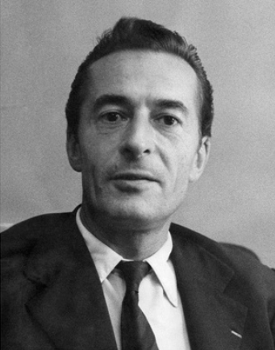

Force est de constater que le concept de soumission occupe une place grandissante dans le paysage culturel et social de notre pays. A tel point que son refus est devenu le mot d’ordre d’une force politique mobilisant plusieurs millions de citoyens.
Si l’accès de ces idées au second tour de l’élection présidentielle semble peu probable en l’état actuel des choses, cela ne nous dispense pas de réfléchir à ce que signifient la soumission et son refus. D’une part, la partie n’est encore pas perdue, certaines alliances restant possibles et de nombreux indécis pouvant encore être convaincus. D’autre part, la question de la soumission restera à l’ordre du jour tant que la concentration du pouvoir et des capitaux l’emportera contre les biens sociaux, la démocratie et la planète toute entière.
L’exigence de faire mieux et de penser mieux demeure. Si l’on veut que la question prenne toute son envergure, jusqu’à faire partie des préoccupations centrales d’une majorité d’électeurs, il faut donner plus de consistance et d’épaisseur à ce concept qui hante nos consciences depuis le Discours de la servitude volontaire d’Etienne de la Boétie (1548).
Il faut notamment s’affranchir des systèmes abordant la soumission sous un angle exclusivement sociologique ou économique, car ceux-ci définissent des lignes de fractures contre-productives et parfois infondées qui affaiblissent la cause qu’ils cherchent à promouvoir. Pour s’en convaincre, il suffit de constater qu’une proportion non-négligeable de l’élite intellectuelle du pays – souvent d’origine bourgeoise – partage l’analyse des «Insoumis», tandis que la moitié de la classe ouvrière soutient une famille de châtelains millionnaires et autoritaires.
Ce n’est donc pas sur le plan de la sociologie ou de l’économie que le refus de la soumission parviendra à s’universaliser et à redéfinir le système dans lequel nous vivons, mais sur le terrain de la psychologie et – en filigrane – de la biologie.

La figure du biologiste engagé
Chirurgien et neurobiologiste, Henri Laborit compta parmi les scientifiques français les plus célèbres de la seconde moitié du XXe siècle, pour avoir découvert entre autres choses le premier des neuroleptiques (molécules utilisées dans le traitement de la schizophrénie). Mais il fut également un grand théoricien des hiérarchies sociales, de leur origine évolutive à leur instanciation neurobiologique, en passant par leur étude anthropologique ou leur représentation cinématographique (dans Mon Oncle d’Amérique, pour laquelle il obtint la Palme d’Or 1980 aux côtés d’Alain Resnais).
Laborit voyait dans la dominance et la soumission les deux faces d’un même fléau qu’il a combattu jusqu’au bout avec les armes qui étaient les siennes. On dit même que son aversion pour les ronds de jambe et autres courbettes académiques nécessaires à l’obtention des faveurs de l’intelligentsia médicale parisienne l’a privé du Prix Nobel ( source, voir aussi la nécrologie publiée par Libération le 20 mai 1995).
Malgré un fort engagement dans le débat public, son indépendance d’esprit le tint éloigné de tout parti politique : Henri Laborit critiquait sévèrement le capitalisme comme le communisme. Il soutenait que la construction d’une nouvelle voie écologique et sociale dépendrait de notre capacité à intégrer – dans la construction politique – les découvertes issues de la «biologie des comportements» (que l’on appellerait aujourd’hui neurosciences cognitives), de la cybernétique et des sciences de la complexité, dont il fut l’un des précurseurs.
En raison de la richesse et des multiples niveaux de description qui distinguent la pensée d’Henri Laborit, il est très difficile de synthétiser cette dernière. De plus, comme certains de mes travaux ont pour vocation d’approfondir, de tester et de moderniser un certain nombre d’hypothèses et de théories qui parsèment son oeuvre, je serais à tout instant tenté de substituer ma pensée à la sienne, au risque de déformer à la fois son héritage et ma propre conception du problème.
Par conséquent, je propose au lecteur de se remémorer Henri Laborit ou de se familiariser avec lui par l’intermédiaire d’une série de citations extraites de son ouvrage le plus diffusé : La nouvelle grille (1976). Ces quelques fragments sont organisés en 8 grands thèmes. Plus d’actualité que jamais, j’espère qu’ils donneront du grain à moudre, aussi bien à ceux qui défendent l’insoumission qu’à ceux qui croient pouvoir s’en dispenser.
La soumission comme moyen de domination
«La culture d’une époque représente […] les règles auxquelles un individu doit se soumettre […] pour s’élever dans les hiérarchies et atteindre la dominance.» La nouvelle grille (p107, Folio essais).
«Tout petit Français, peut, nous dit-on, espérer un jour devenir président de la République. Mais on oublie d’ajouter : s’il respecte les règles du jeu, les jugements de valeur institutionnalisés par la bourgeoisie, en particulier la propriété privée, dont celle des moyens de production.» La nouvelle grille (p109, ibid.)
«On verra donc des sujets particulièrement efficaces […] sur le plan technique et parfaitement obtus sur le plan politique, puisque suffisamment satisfaits de leur dominance pour ne pas aller chercher à en voir lucidement les causes, la signification, ni surtout à la remettre en question.» La nouvelle grille (p143).
«Un prisonnier à l’intérieur des murs de sa prison est libre de rêver, et un PDG, libre apparemment de se déplacer, ne le fera qu’en obéissant au mythe aliénant de la propriété, de la rentabilité et de la production. La recherche de la dominance nous entraîne aux mécanismes les plus primitifs de notre système nerveux central aussi inéluctablement que les menottes des policiers». La nouvelle grille (p160)
La soumission comme diversion existentielle
« Cette angoisse qui prend à la gorge tout être humain dès qu’il a conscience d’être et qui ne le quitte qu’à la mort, les sociétés contemporaines font un effort constant pour l’occulter car elle gêne leur finalité de production. On peut se demander même si ce n’est pas un facteur important de l’établissement des hiérarchies. Quand on est préoccupé par sa promotion sociale on l’est moins par la signification de sa propre existence et l’on redevient plus efficace dans un processus de production. On peut se demander si celui qui réussit le mieux dans un tel processus, celui dont l’élévation hiérarchique est la mieux assurée, n’est pas finalement l’être le moins humain, le moins conscient, le plus aveugle, je serais tenté de dire le moins ‘‘intelligent’’, le plus automatisé, le plus satisfait, le plus gratifié par sa dominance, le moins inquiet, le véritable ‘‘imbécile heureux’’ » La nouvelle grille (p201).
«Il faut signaler que si les systèmes hiérarchiques sont sources de situations conflictuelles et d’angoisse, ils sont aussi une source de sécurisation. La création d’automatismes conceptuels et comportementaux d’origine socioculturelle permet l’occultation de l’angoisse existentielle en fournissant des grilles explicatives simples, des chefs responsables et sécurisants et le plus souvent de plus petits que soi à paternaliser pour assouvir le narcissisme congénital. Malheureusement, elle châtre toute créativité en punissant tout projet non conforme au système de valeurs imposé par les dominants.» La nouvelle grille (p71).
La figure de l’intellectuel soumis
« Celui qu’il est convenu d’appeler l’intellectuel, surtout spécialisé dans une certaine technique, bénéficierait, pour certains, d’un pouvoir. On peut admettre en effet que s’il se révèle un propagandiste efficace des jugements de valeur qui constituent l’armature de la société où il vit, il sera gratifié en conséquence : les moyens de travail, l’accès aux moyens de diffusion des lieux communs qu’il exprime, les ‘‘honneurs’’, les satisfactions académiques lui seront accordés pour avoir joué ce rôle d’honnête homme, de véritable humaniste qui a fait preuve de tant d’élévation d’esprit. En effet, l’élévation de l’esprit n’est réalisable on le sait que dans le sein de l’idéologie dominante, celle qui assure la solidité des structures hiérarchiques en place.» La nouvelle grille (p201).
La consommation comme soumission
« Toute la publicité est fondée sur cette nécessité de faire connaître pour susciter le besoin. On ne peut désirer ce que l’on ignore. Par contre, on peut désirer ce qu’un autre possède et que l’on ne possède pas. Surtout si la possession de l’objet permet de se situer dans un ordre hiérarchique et participe à l’établissement de la dominance.» La nouvelle grille (p104).
«Aussi longtemps que les hiérarchies de valeur subsisteront et qu’elles s’établiront sur la propriété par l’intermédiaire de la possession de l’information spécialisée acquise par l’apprentissage manuel ou conceptuel, les dominés chercheront à conquérir un faux pouvoir qui est celui de consommer. Or, la consommation n’a pas de fin, et jamais une égalité réelle des chances et du pouvoir ne pourra s’établir sur la consommation. Le pouvoir réel qu’exige le dominé, c’est moins celui de consommer que celui de participer à la décision. Or, pour cela c’est une information généralisée et non pas seulement spécialisée qu’il doit acquérir.» La nouvelle grille (p156).
De la lutte des classes aux classes fonctionnelles
« Sur le plan politique, c’est-à-dire sur celui de la signification du travail de chacun intégré dans un ensemble et sur la finalité de cet ensemble dans les ensembles de complexité supérieure qui l’englobent, un ingénieur hautement spécialisé n’a souvent pas plus de connaissance qu’un ouvrier spécialisé, bien qu’elles soient différentes car dictées par des jugements de valeurs et des préjugés nécessaires au maintien de sa dominance hiérarchique». La nouvelle grille (p119)
«Dans un organisme vivant, la spécialisation fonctionnelle, qui équivaut dans un organisme social à la spécialisation professionnelle ne s’accompagne d’aucune valeur particulière et […] elle ne procure d’autre part aucune possibilité d’agir séparée de l’ensemble organique». La nouvelle grille (p120)
«Ces classes fonctionnelles n’ont donc rien à voir avec les classes hiérarchiques de la ‘lutte des classes’. Mais comme d’autre part nous avons vu que, en introduisant la notion d’information en sociologie humaine, les échelles hiérarchiques sont à ce point progressives qu’il est impossible de savoir à quel moment on quitte le prolétariat pour entrer dans la bourgeoisie, impossible de savoir sur quels critères on peut classer un individu dans une classe ou une autre, sinon sur un état d’esprit ou l’appartenance à un parti, on peut se demander si la notion de classe telle qu’elle était comprise et vécue au début du siècle a encore une réalité autre qu’affective.» La nouvelle grille (p154).
Dominer autrui, dominer la nature
«Le bénéfice d’une production industrielle accrue n’est souvent ainsi qu’un bénéfice à court terme et un drame à longue échéance […]. D’autres conséquences de la croissance ont été également invoquées : épuisement des ressources énergétiques, accumulation accélérée de déchets non recyclables dans les grands cycles de la matière. C’est ainsi que la recherche de la dominance à travers le mythe de la production des biens consommables, exigeant aussi de fortes concentrations humaines au sein des mégalopoles modernes, polluant au profit surtout des dominants (puisque c’est la recherche de la dominance qui en est la motivation) des biens collectifs, comme l’air, l’eau, l’espace bâti et l’espace sonore, […] arrive aujourd’hui à constituer une réelle menace pour l’espèce humaine tout entière.» La nouvelle grille (p156).
«Le problème consiste donc à comprendre comment le mythe de la croissance pour la croissance, et non pas seulement pour la satisfaction des besoins fondamentaux a pu s’instaurer, en occultant à ce point les motivations, qu’il est pris pour base des comportements sociaux en pays industrialisés, et qu’il peut aujourd’hui être défendu comme une fin en soi, comme la finalité même de l’espèce humaine, en l’enrobant de notions affectivo-mystiques, telles que celles du bonheur, des besoins, du progrès, de la domination de l’homme sur la marâtre nature, quand ce n’est pas celle du génie de la race blanche, ou d’un régime idéologique particulier.» La nouvelle grille (p105).
De l’insuffisance de l’insoumission sociologique
« Croire que l’on s’est débarrassé de l’individualisme bourgeois parce que l’on s’exprime à l’ombre protectrice des classes sociales et de leurs luttes, que l’on semble agir contre le profit, l’exploitation de l’homme par l’homme, les puissances d’argent, les pouvoirs établis, c’est faire preuve d’une parfaite ignorance de ce qui motive, dirige, oriente les actions humaines et avant tout de ce qui motive, dirige et oriente nos propres jugements, nos propres actions. Cela ne veut pas dire qu’il ne faille pas s’exprimer ainsi et agir en ce sens, mais cela veut dire qu’il est utile de savoir que, derrière un discours prétendument altruiste et généreux, se cachent des motivations pulsionnelles, des désirs de dominance inassouvis, des apprentissages culturels, une soumission récompensée à leurs interdits ou une révolte inefficace contre l’aliénation de nos actes gratifiants à l’ordre social, une recherche de satisfactions narcissiques, etc. De sorte que lorsqu’une communauté d’intérêts permet à un groupe humain de renverser un jour le pouvoir établi, on voit aussitôt naître au sein du nouveau pouvoir une lutte compétitive pour l’obtention de la dominance, un nouveau système hiérarchique apparaître et s’institutionnaliser. Le cycle recommence.» L’Éloge de la fuite
L’importance de la transmission du savoir neuroscientifique
« C’est […] par une connaissance croissante des structures du monde qui l’entoure que [l’homme] a pu en retour structurer celui-ci au mieux de sa pensée. Du moins jusqu’à une époque récente. Mais l’ignorance où il est encore de la structure fonctionnelle de son système nerveux lui a interdit une action efficace sur lui-même et sur ses rapports avec ses contemporains». La nouvelle grille (p135)
«Lorsque les lois de la gravitation ont été connues, l’homme a pu aller sur la lune. Ce faisant, il ne s’est pas libéré des lois de la gravitation mais il a pu les utiliser à son avantage.» La nouvelle grille (p161).
«L’ignorance des bases biophysiologiques des comportements fait que tout bienfaiteur du peuple, s’il fait autre chose que parler en son nom et se mêle d’agir, agira rapidement pour lui-même ou pour les concepts qu’il manipule et qui ne sont pas généralement ceux du commun, ceux du peuple». La nouvelle grille (p171)
«Peut-être serait-il temps de leur dire […] qu’il existe aussi une science naissante dont il est urgent de diffuser les bases, comme on a pu diffuser celles de l’arithmétique, indispensable aux civilisations mercantiles pour assurer leur comptabilité, et que cette science est celle du monde vivant.». La nouvelle grille (p100)
Conclusion
Henri Laborit n’hésitait pas à qualifier de révolutionnaire l’idée selon laquelle la grille d’analyse neuroscientifique – une fois intégrée et comprise par une majorité de citoyens – permettrait non seulement la construction d’institutions plus efficaces, mais aussi d’une société plus résiliente contre les dérives associées à l’exercice du pouvoir. A plus petite échelle, il considérait que la connaissance des motivations et des biais (cognitifs) humains devrait également enrichir nos interactions sociales, libérer nos vies intérieures et accroître notre capacité à entreprendre ensemble.
A cet égard, il est enthousiasmant d’observer la prolifération d’initiatives visant à disséminer le savoir en (neuro)sciences cognitives et sociales. On peut notamment citer des événements comme Semaine du Cerveau (13 au 17 mars 2017) et le Forum des Sciences Cognitives(29 avril 2017), des associations très actives comme Cog’Innov, des blogs collectifs tels que Cortex Mag, mais aussi de nombreux blogs individuels tenus par des chercheurs, des journalistes ou de simples citoyens passionnés par l’esprit humain.
Le phénomène étant jeune, la jonction avec les initiatives citoyennes plus orientées vers la chose politique n’a pas encore eu lieu. Mais il ne fait aucun doute que le mouvement va continuer de s’étendre et que les neurosciences occuperont une place de plus en plus importante dans les débats publics futurs. Car, au-delà de la compréhension (et du désarmement) des mécanismes responsables du recommencement et du renforcement perpétuels de la dominance et des inégalités, de nombreux autres enjeux nous y ramènent : nouvelles formes d’addiction, vieillissement de la population, amélioration cognitive, interfaces cerveau-ordinateur, intelligence artificielle, etc.
Ceci étant dit, cet hommage à Henri Laborit ne serait pas entier s’il ne se terminait pas sur un avertissement contre toute utilisation dogmatique du savoir en neurosciences. En effet, ce dernier a toujours fustigé l’adhésion aveugle aux grands discours et aux utopies définitives, dans lesquels il voyait une promesse d’immobilisme intellectuel et social. Dans tous ses ouvrages, le lecteur est invité à penser par-delà les idéologies et les lieux communs et à n’utiliser les grilles existantes (la sienne comprise) que pour enrichir de nouvelles analyses et définir de nouveaux objectifs adaptés aux contingences du présent.
«Quand l’attirance des mythes, de l’irrationnel, n’est pas suffisante à entraîner son adhésion, la jeunesse contemporaine se ‘‘satisfait’’ par l’emploi des grilles connues, la grille marxiste ou la grille psychanalytique qui lui semblent fournir une réponse cohérente aux interrogations fondamentales que se pose tout homme conscient en cette fin de XX ème siècle. Ces grilles malheureusement refusent l’autorisation d’aller chercher en dehors d’elles et plus loin. Elles sont elles-mêmes en effet à la base de hiérarchies individuelles et de groupes». La nouvelle grille (p99)
«Le danger d’une grille, quelque que soit son efficacité temporaire, est de faciliter la sclérose conceptuelle, comme celle d’Aristote avant celle de Marx ou celle de Freud, a figé des millions d’hommes dans une conception incomplète des faits» La nouvelle grille (p157).
Prenons donc garde à ne pas reproduire la même erreur avec les «nouvelles grilles» issues de la recherche en neurosciences. Même si elles nous permettent d’expliquer mieux qu’hier les évolutions du monde, elles ne remplaceront jamais l’effort d’imagination et de coopération intellectuelle dont dépend notre avenir commun.
Article original (Wayback Machine)